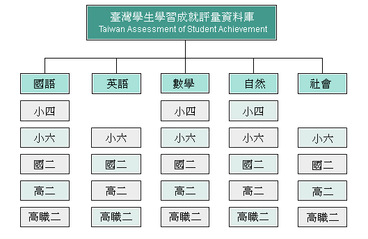

簡介
臺灣學生學習成就評量資料庫（Taiwan Assessment of Student Achievement, 簡稱 TASA）始於2004年試行，於2006年起由國家教育研究院接手相調查工作。自2008年起調整施測週期為國小、國中、高中職，每年段3年一輪循環。
目的與用途
1. 提供標準化的學習成就資料，作為分析學生學習成就上差異表現變項資料，以評估學生未來在學術方面能力之發展與社會期許。
2. 瞭解國內學校教學及學生學習成效之現況，作為課程與教學政策改進之參考，並為縣市政府教育局及學校推動補救教學之重要參據。
3. 提供量化資料，提供國內外相關研究人員，深入探討學生學習成就相關政策議題。
調查範圍與對象
調查範圍與對象
調查主要對象為國小四、六年級、國中二年級、高中職二年級學生，每三年一輪方式施行各年度調查。各科目年級對應如下圖所示。
每位學生調查2考科及1問卷
在受測科目方面，分別為國語文、英語文、數學、自然、社會（小學四年級不考英語文與社會），因每位學生受測兩種不同科目，考科組合共有下列10種：（小四扣除英語文與社會科組合僅有3種）國語文及英語文、國語文及數學、國語文及自然、國語文及社會、英語文及數學、英語文及自然、英語文及社會、數學及自然、數學及社會、自然及社會。 在共同問卷方面，每名學生均需填寫，目的在搜集學生學習、家庭等背景資料，以為資料庫變項分析使用。
抽樣設計
在行政區域分層變數下，各縣市規劃抽樣學校數依據各縣市實際國小學校數比例進行分配；再以學校規模為分層變數，將各縣市規劃抽樣學校數依據學校規模大、中、小學校數比例進行分配。 經過行政區域與學校規模分層後，將每個層級下的學校依據PPS抽樣方法抽取樣本學校，再進一步從樣本學校抽取樣本班級，並計算樣本班級的樣本學生數。 為改善縣市抽樣代表性不足，訂定抽樣準則為：單科單縣市至少施測400人。如果各縣市原定的抽樣規劃如無法達到此準則，則加抽學校。其中，澎湖、金門、連江三縣市因母群學生數與準則差異不大，因此三縣市進行普測而非抽測。
評量架構與試題
各年段評量架構
| 年段/科目 | 國語文 | 英語文 | 數學 | 自然 | 社會 |
|---|---|---|---|---|---|
| 國小 | 下載 | 下載 | 下載 | 下載 | 下載 |
| 國中 | 下載 | 下載 | 下載 | 下載 | 下載 |
| 高中職 | 下載 | 下載 | 下載 | 下載 | 下載 |
各年段公告範例試題
| 年段/科目 | 國語文 | 英語文 | 數學 | 自然 | 社會 |
|---|---|---|---|---|---|
| 國小、國中 | 下載 | 下載 | 下載 | 下載 | 下載 |
| 高中、高職 | 下載 | 下載 | 下載 | 下載 | 下載 |
釋出資料管理
釋出項目及格式
各年度對應釋出項目資料，詳如資料清單，說明如下：
| 項目 | 內容 | 格式 |
|---|---|---|
| 選擇題試題作答反應 | 該年度學生作答之國、英、數、自、社各科選擇題作答反應 |
|
| 建構題試題及作答反應 | 該年度國語文及數學建構題（國語文為作文、數學僅小四、六及國中二年級有建構題）。 |
|
| 共同問卷 | 該年度學生作答之共同問卷原始資料。 |
|
問卷釋出內容，大致可歸納如下：學生背景變項、家庭結構、學習歸因、學習策略、學習特質等五大類，歷年相關問卷題目如下：
| 年度（年） | 年段 | 下載 |
|---|---|---|
| 2016 | 國中學校/學生問卷 | 下載 下載 |
| 2015 | 國小 | 下載 |
| 2014 | 高中及高職 | 下載 |
| 2013 | 國中 | 下載 |
| 2012 | 國小 | 下載 |
| 2011 | 高中及高職 | 下載 |
| 2010 | 國中 | 下載 |
| 2009 | 國小 | 下載 |
| 2007 | 國小、國中、高中及高職三年段 | 下載 |
| 2006 | 國小、國中、高中及高職三年段 | 下載 |
| 2005 | 國小六年級 | 下載 |
|
*目前釋出年段僅2009年起，2008年未施測，故無相關資料。 *若需申請統計資料，請詳「釋出要點」 |
||
釋出要點 / 線上申請與審查
學生學習成就資料申請
一、依「本院學生學習成就資料釋出要點」辦理。
二、符合下列資格始得申請
| 類別 | 人員 | 申請資料 |
|---|---|---|
| 第一類 | 第一類申請者：國內學術研究機構及國內公私立大專院校之專任研究人員（含博士後研究）、專任教師，以及公務機關人員，需於申請時提供可辨識身分之證件上傳。 | 學生層級之資料 |
| 第二類 | 第二類申請者：國內外公私立大專院校博碩士在學學生，經指導教授於資料申請書上親筆簽名（若尚無指導教授，則請所長於資料使用申請書上親筆簽名）。 | 學生層級之資料 |
| 第三類 | 第三類申請者：本院所屬研究人員（含博士後研究）、公務人員，以及行政人員。 | 學生及學校層級資料 |
三、各申請案採線上申請及審查，流程如下：
| 步驟 | 內容 |
|---|---|
| 1 | 閱讀並填寫資料使用申請書（含共同使用者申請書）、資料使用合約書 |
| 2 | 至釋出資料申請網頁（tasarelease）填寫基本資料、勾選想要申請資料，並完成說明1申請書上傳 |
| 3 | 本院接獲申請案後進行線上審查後回復，審查時間約1個月，審查重點如下： (1) 申請資料是否為研究計畫內容所需。 (2) 研究問題分析與研究方法應用是否正確。 |
文件下載
聯繫方式
申請資料時如遇共同使用者，須在資料申請表上將其同時列為資料使用人，並註明共同使用者個人基本資料，共同遵守資料使用規定。若有問題可來信詢問：wantiend@mail.naer.edu.tw，張宛婷小姐。